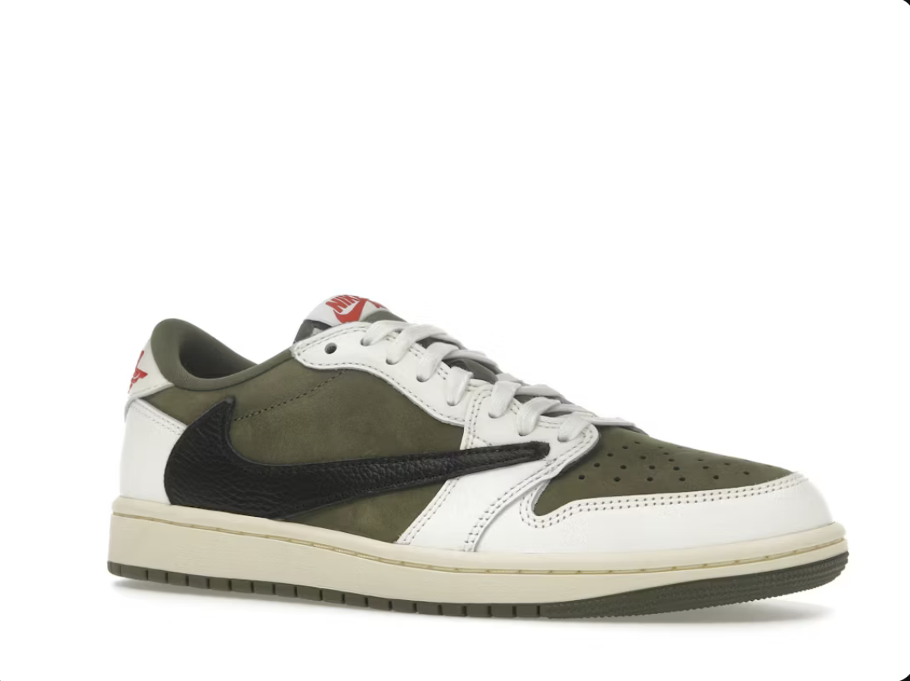
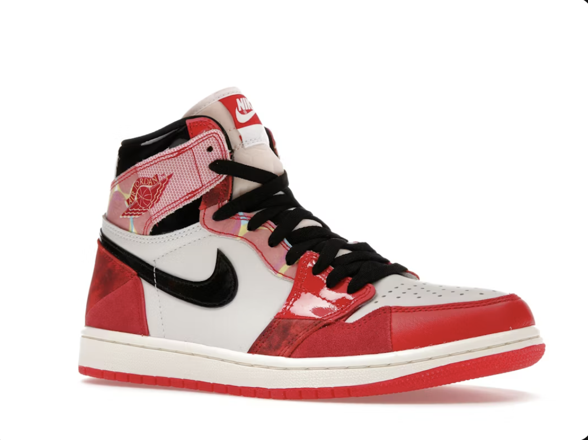
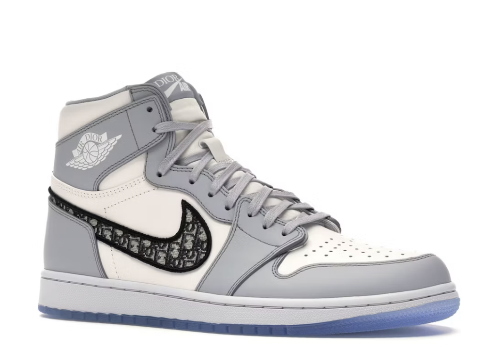
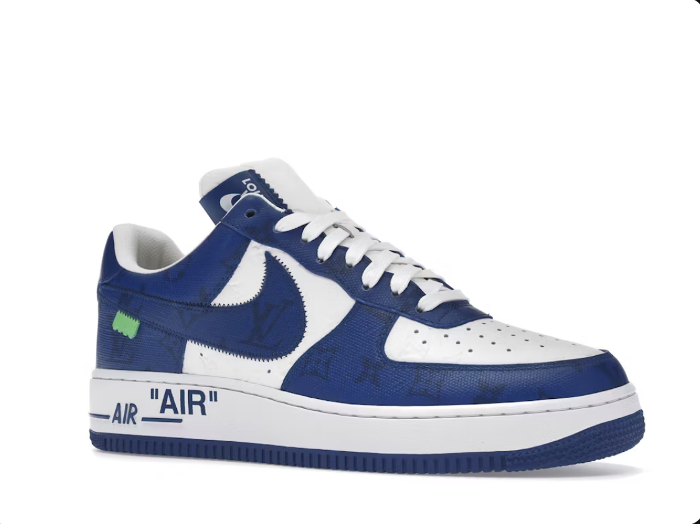

A Houston-i rapper, Travis Scott és a Jordan Brand 2019-es együttműködése a modern sneaker történelem egyik legnagyobb mérföldköve. A cipő legjellegzetesebb védjegye a hatalmas, megfordított Nike pipa az oldalsó részen, ami teljesen szembement az addigi dizájn-szabályokkal. A prémium barna és fehér nubuk bőr használata, a rejtett zseb a boka résznél, valamint a sarkakon elhelyezett "Cactus Jack" logók azonnal a gyűjtők első számú célpontjává tették ezt a limitált modellt.
Ez a különleges kiadás a 2018-as "Spider-Man: Into the Spider-Verse" című animációs film tiszteletére jelent meg, mivel a főszereplő, Miles Morales pontosan ezt a sneakert viseli a történetben. Az ikonikus piros-fekete "Chicago" színállás alapjaira építkezik, de a piros bőrpaneleken finom, fényvisszaverő pöttyözés található, ami a képregények nyomtatási textúráját idézi. A jégkék, áttetsző talp és a különleges nyelvcímke miatt a képregényrajongók és a sneakerheadek körében is kultikus darab.


A high-fashion és az utcai viselet történetének egyik legexkluzívabb fúziója, amely a Jordan Brand és a Dior divatház együttműködéséből született 2020-ban. Olaszországban, prémium minőségű borjúbőrből kézzel készítették, a Nike pipát pedig a Dior jellegzetes ferde mintázata (Oblique monogram) díszíti. A mindössze 8500 darabra limitált, sorszámozott kollekció darabjai a csillagászati kiskereskedelmi áruk ellenére pillanatok alatt elkeltek, és azóta a luxus-sneaker kategória abszolút királyává váltak.
A legendás tervező, Virgil Abloh utolsó munkáinak egyike a Louis Vuitton 2022-es tavaszi-nyári bemutatójára készült, ahol az Air Force 1 sziluettet ötvözte a francia luxusmárka anyagaival. A cipő teljes felületét a LV ikonikus Monogram és Damier mintázatai borítják, a fűzőkön pedig Abloh védjegyének számító "LACET" felirat látható. A Fiesso d'Artico-i műhelyben készült cipők a legmagasabb szintű kézműves cipőgyártást képviselik, és hidat képeznek a hip-hop gyökerek és a párizsi luxus között.

| Modell neve | Színállás (Colorway) | Eredeti megjelenés | Stíluskód (SKU) | Eredeti ár (Retail) |
|---|---|---|---|---|
| Air Jordan 1 Retro High | Travis Scott Mocha | 2019 | CD4487-100 | ~55 000 Ft ($175) |
| Air Jordan 1 Retro High | Origin Story (Spider-Man) | 2018 | 555088-602 | ~50 000 Ft ($160) |
| Air Jordan 1 High | Dior | 2020 | CN8607-002 | ~630 000 Ft ($2000) |
| Nike Air Force 1 Low | Louis Vuitton White Monogram | 2022 | MS2222 | ~870 000 Ft ($2750) |